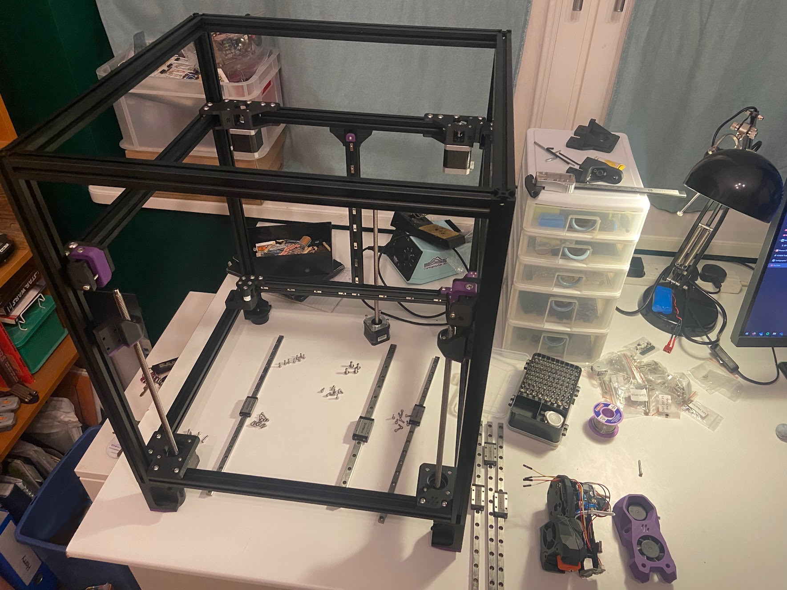
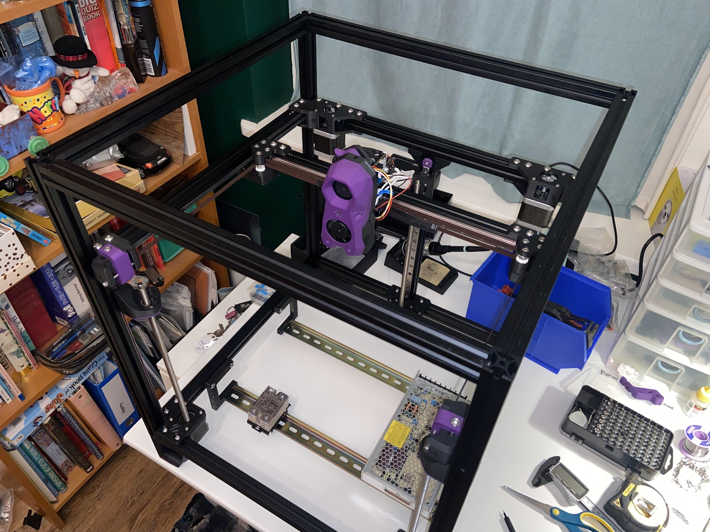
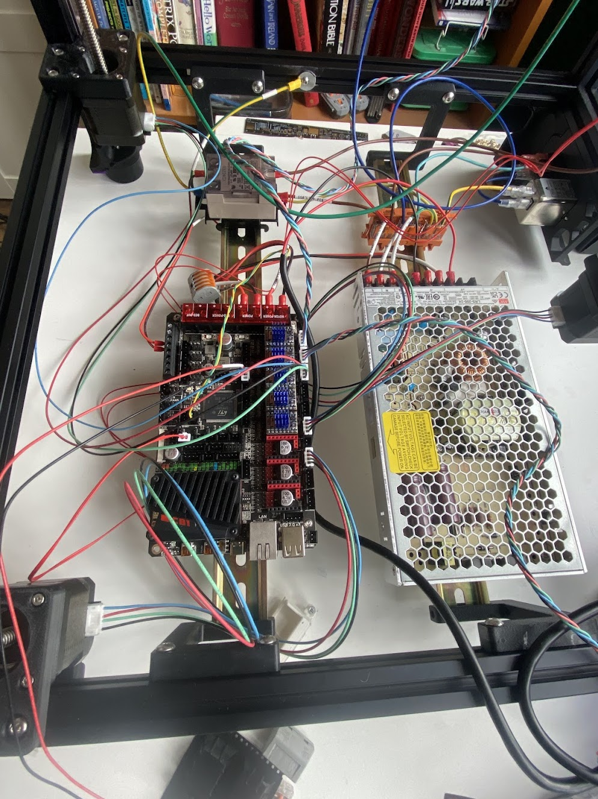
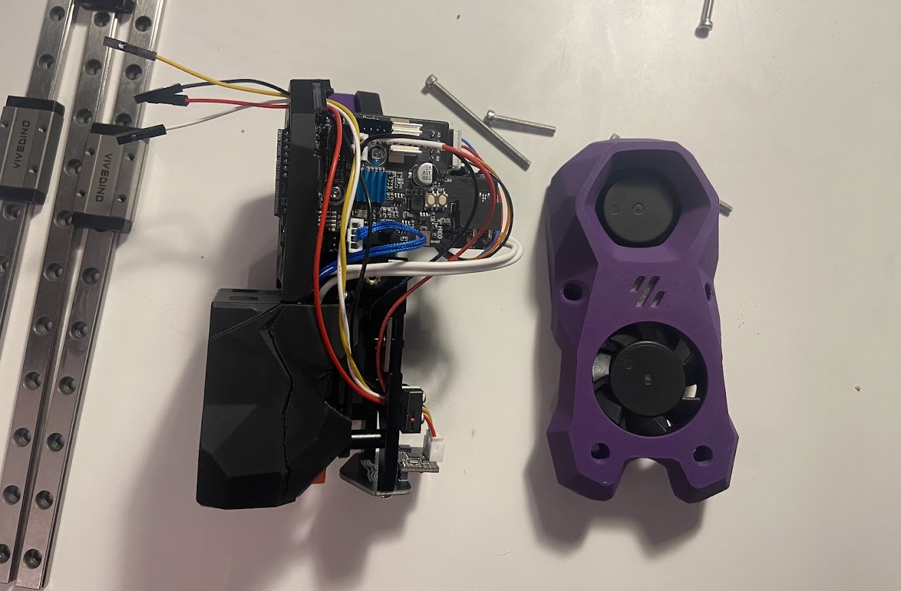
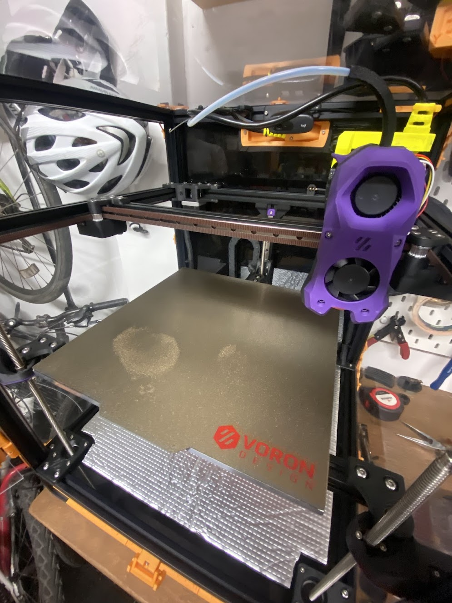
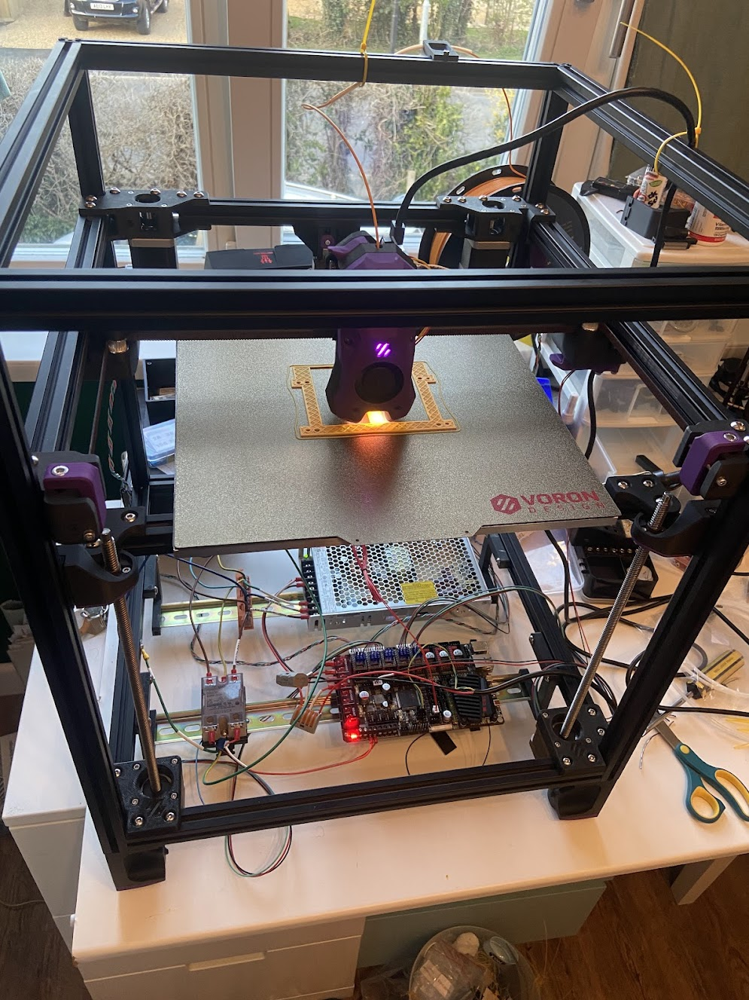

explain what voron is. explain what the trident is. explain why i wanted to do this. explain what i learnt. explainComplete build of a Voron Trident open-source 3D printer, featuring a fully enclosed CoreXY design capable of printing high-performance materials including ABS, PETG, and engineering plastics. The project involved precision mechanical assembly, electronics integration, and firmware configuration.
The Voron Trident combines cutting-edge 3D printing technology with open-source accessibility, featuring automatic bed leveling, chamber heating for temperature-sensitive materials, and exceptional print quality through rigid frame construction and advanced motion control systems. The enclosed design enables consistent printing of warping-prone materials while maintaining dimensional accuracy.
Gallery





